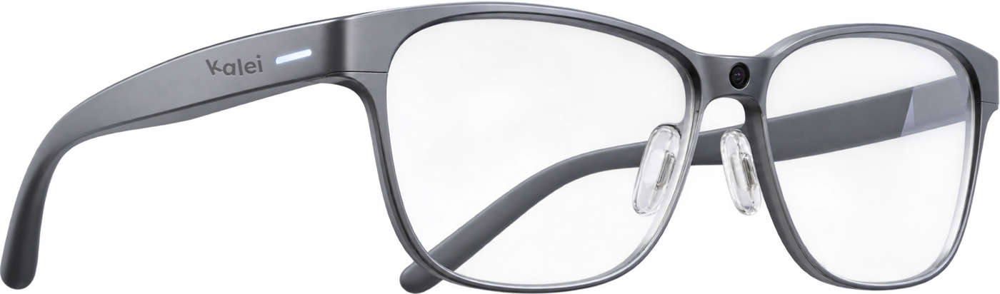

Who are the glasses for?
Reading aloud shouldn't be scary.
Smart glasses that adapt text to the way your child reads, spot spelling mistakes while they write, and turn those mistakes into five minutes of practice a day.
In development. Signing up is free and you only get news about the product.

Three steps, no extra effort
It sees the page
A small camera in the frame recognises whether your child is reading or writing.
It adapts to your child
The text appears in the lens in a font that research found easier with dyslexia, with extra spacing and long words split into syllables. It can also read it aloud and explain any word.
It helps them learn
When they write, it marks a mistake and lets them try again before showing the answer. The app turns their own mistakes into short flashcards and quizzes.
Everything they need, nothing they don't
Tap a number to see what each part does.
1Camera
In the bridge, between the eyes. It looks at the page your child is reading or writing. Images are analysed and deleted, never stored.
2Exam lightSchool
A small light on the outside of the arm. It turns on during exams, so the teacher can see at a glance that corrections are off. Your child doesn't see it.
3Display in the lens
A tiny transparent display shows the adapted text and hints. Only your child can see it, and the lens stays clear.
4Battery and chip
Hidden inside the arms, so the front stays slim. Home lasts for homework sessions; School is built for a full school day.
5Speaker near the ear
Reads words and sentences aloud, quietly, only for your child.
6Clear lenses
They look like normal glasses. Prescription lenses are planned through opticians.
Switch the glasses on
This is what your child sees with and without them.
Reading
A font that research found easier with dyslexia, more space between letters and words, long words split into syllables, and a dictionary for any word.
Spelling
First a hint, then the answer, so your child learns the word instead of just copying it. The mistake goes to the app for practice later.
No science fiction
Every part of these glasses already exists today. What is new is putting them together for children with dyslexia.
Glasses that read
AI glasses for blind people already read printed and handwritten text aloud.
A screen in the lens
Display glasses on sale today show text inside the lens and last around six hours of mixed use.
Backed by research
Font choice (Rello and Baeza-Yates, 2013) and extra letter spacing (Zorzi et al., 2012) helped readers with dyslexia make fewer mistakes.
To be honest: these studies are small, so the results are promising, not final. That is why we will test with real families before promising anything.
Choose yours
Their glasses, their colour
Discreet black, or a clear colour they choose. The same technology inside.
Every colour comes in Home and School.
Home
For homework and reading at home, with you nearby.
- All reading and writing help
- Practice app with progress for parents
- Light, everyday frame
School
Everything in Home, built to last a full school day and keep the teacher in control.
- Exam mode that only the teacher can unlock
- Battery for the whole school day
- Reinforced frame for the playground
| Feature | Home | School |
|---|---|---|
| Reading aids: font, spacing, syllables | ✓ | ✓ |
| Reads aloud and explains words | ✓ | ✓ |
| Spelling help while writing | ✓ | ✓ |
| Practice app: flashcards and quizzes | ✓ | ✓ |
| Progress for parents | ✓ | ✓ |
| Exam mode: corrections off, unlocked only by the teacher | – | ✓ |
| Teacher view on phone or tablet | – | ✓ |
| Battery | Homework sessions | Full school day |
| Frame | Light | Reinforced |
These are the goals for the first version, based on smart glasses that exist today. They may change as we test.
Everyday
Dyslexia doesn't end at school. For reading and writing at work, at university or at home.
- All reading and writing help
- Practice app with your own progress
- Discreet black frame
Designed for children, first
No video is stored
The camera only looks at the page. The image is analysed and deleted straight away. It is never saved or shared.
Minimal data
We only keep what helps your child learn, like the words they find hard. You can delete it at any time.
They look like normal glasses
A sleek design, nothing that makes your child stand out in class.
Be the first to know
Leave your email and we'll send you more information. If you want, we'll also let you know as soon as early access opens.
We are a student team from LEINN at Mondragon University, based in Berlin.
Questions parents ask
Do they cure dyslexia?
No. Dyslexia does not go away. The goal is that your child reads with less effort, makes fewer mistakes and, over time, needs the glasses less.
My child already wears glasses.
We plan to offer prescription lenses through opticians.
Will the school allow them?
We are talking to schools to present them as a learning support. The School version has exam mode, so the teacher stays in control during tests.
When will they be available?
We are building the first prototype now. Sign up and you will be among the first to hear.
How much will they cost?
We haven't set a price yet. Sign up and you'll hear it first.